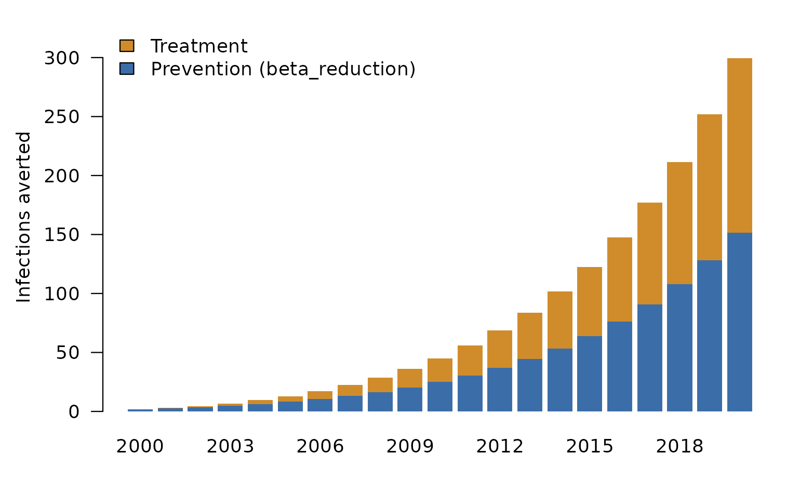

shapleydecomp answers one question about a simulation model: how much of an outcome is due to each of its inputs? You give it a calibrated model and a list of factors (treatment coverage, a prevention programme, a demographic trend). It runs the model under every combination of observed and counterfactual factor values, and splits the outcome among the factors with Shapley values. The attributions always add up exactly to the total.
The package knows nothing about your model. It talks to the model through four S3 methods, so any discrete-time simulation, in R or wrapped from C++, can be decomposed once those methods exist.
1. A model
This vignette uses a small SIR epidemic with two interventions:
-
beta_reduction, a prevention programme that cuts transmission by up to 50%; -
treatment_effect, treatment that speeds recovery.
Both scale up linearly from 1990 to 2020. The model object holds the
fixed structure, and the parameters hold the inputs the decomposition
will vary. That split matters, because shapleydecomp only modifies
params.
create_sir_model <- function(population = 1e5, years = 1990:2020) {
structure(
list(population = population, years = years,
S0 = population - 10, I0 = 10, R0 = 0),
class = "sir_model"
)
}
create_sir_params <- function(years = 1990:2020) {
yrs <- as.character(years)
list(
years = years,
base_beta = 0.3,
gamma = 0.1,
beta_reduction = setNames(seq(0, 0.5, length.out = length(years)), yrs),
treatment_effect = setNames(seq(0, 0.15, length.out = length(years)), yrs)
)
}2. The interface
Four methods are required.
| Method | Job |
|---|---|
run_simulation() |
Run the model on a parameter set and return its raw output. |
summarize_results() |
Turn raw output into a data.table with a
year column and one column per outcome. |
get_baseline_value() |
Say what “counterfactual” means for a factor. This is called once per factor. |
build_counterfactual() |
Return params with one factor switched to its
counterfactual from a given year onward. |
run_simulation.sir_model <- function(model, params, ...) {
n <- length(model$years)
S <- I <- R <- inf <- deaths <- numeric(n)
S[1] <- model$S0; I[1] <- model$I0; R[1] <- model$R0
for (t in 2:n) {
yr <- as.character(model$years[t])
beta <- params$base_beta * (1 - params$beta_reduction[[yr]])
gamma <- params$gamma + params$treatment_effect[[yr]]
inf[t] <- beta * S[t - 1] * I[t - 1] / model$population
deaths[t] <- 0.01 * I[t - 1]
rec <- gamma * I[t - 1]
S[t] <- S[t - 1] - inf[t]
I[t] <- I[t - 1] + inf[t] - rec - deaths[t]
R[t] <- R[t - 1] + rec
}
data.table::data.table(year = model$years, infections = inf, deaths = deaths)
}
summarize_results.sir_model <- function(model, sim_output, ...) sim_output
get_baseline_value.sir_model <- function(model, params, factor_name, cf_type,
baseline_year, ...) {
if (cf_type == CF_TOTAL_IMPACT) return(list(type = "zero"))
list(type = "change_since",
value = params[[factor_name]][[as.character(baseline_year)]])
}
build_counterfactual.sir_model <- function(model, params, factor_name,
decomp_year, cf_type,
baseline_values, ...) {
idx <- params$years >= decomp_year
params[[factor_name]][idx] <-
if (cf_type == CF_TOTAL_IMPACT) 0 else baseline_values[[factor_name]]$value
params
}Registering the methods
In a script run at the top level, defining
run_simulation.sir_model is enough, because S3 dispatch
finds it in the global environment. When the methods are defined
somewhere else, such as inside a function, a vignette or a test,
register them so dispatch can find them:
.S3method("run_simulation", "sir_model", run_simulation.sir_model)
.S3method("summarize_results", "sir_model", summarize_results.sir_model)
.S3method("get_baseline_value", "sir_model", get_baseline_value.sir_model)
.S3method("build_counterfactual", "sir_model", build_counterfactual.sir_model)If your model lives in a package, put @export on each
method and roxygen writes the S3method() lines into
NAMESPACE for you. That is the recommended home for a
production model.
3. Validate
validate_model_interface() checks that the methods
exist. Given parameters, it also runs each method once and checks the
shape of what comes back. Run it before a long decomposition.
model <- create_sir_model()
params <- create_sir_params()
validate_model_interface(
model, params,
factors = c("beta_reduction", "treatment_effect"),
summary_vars = c("infections", "deaths"),
baseline_year = 2000
)
#> Validating shapleydecomp interface for class 'sir_model'
#> [OK] run_simulation.sir_model
#> [OK] summarize_results.sir_model
#> [OK] build_counterfactual.sir_model
#> [OK] get_baseline_value.sir_model
#> [--] prepare_decomp.sir_model (optional)
#> [--] supports_warm_start.sir_model (optional)
#> [--] get_warm_start_state.sir_model (optional)
#> [--] run_from_warm_start.sir_model (optional)
#> Running smoke test...
#> [OK] run_simulation + summarize_results
#> [OK] get_baseline_value('beta_reduction')
#> [OK] get_baseline_value('treatment_effect')
#> [OK] build_counterfactual('beta_reduction')
#> Smoke test passed.
#> Validation complete.4. Decompose
res <- shapley_decompose(
model, params,
factors = c("beta_reduction", "treatment_effect"),
summary_vars = c("infections", "deaths"),
decomp_years = 2000:2020,
cf_type = "total_impact",
verbose = FALSE
)
names(res)
#> [1] "decomp" "step_scenarios" "extended_decomp" "run_table"
#> [5] "params"
head(res$decomp)
#> decomp_year measure beta_reduction treatment_effect
#> <int> <char> <num> <num>
#> 1: 2000 infections -1.620383 0
#> 2: 2000 deaths 0.000000 0
#> 3: 2001 infections -1.942431 0
#> 4: 2001 deaths 0.000000 0
#> 5: 2002 infections -2.288005 0
#> 6: 2002 deaths 0.000000 0Each row of res$decomp is one decomposition year and one
outcome. Each factor column holds the Shapley value of that
year’s change in the factor: the outcome with the factor on, minus
the outcome with it at its counterfactual. A negative value means the
factor lowered the outcome. The deaths rows are zero
because deaths in this model follow infections with a one-year lag, so a
policy enacted in year y cannot change
deaths in year y. Its effect on later
years is recorded in res$extended_decomp.
sequential_totals() adds the steps up into each factor’s
total impact at every year:
tot <- sequential_totals(res)
tot[measure == "infections" & year %in% c(2005, 2010, 2020)]
#> year measure beta_reduction treatment_effect
#> <int> <char> <num> <num>
#> 1: 2005 infections -8.174118 -4.777467
#> 2: 2010 infections -25.006188 -20.046996
#> 3: 2020 infections -151.623899 -147.868569
inf <- tot[measure == "infections"]
op <- par(mar = c(3, 4.5, 1, 1))
averted <- -t(as.matrix(inf[, .(beta_reduction, treatment_effect)]))
colnames(averted) <- inf$year
barplot(averted, col = c("#3b6ea8", "#d08c2b"), border = NA, las = 1,
ylab = "Infections averted", ylim = c(0, max(colSums(averted)) * 1.1),
legend.text = c("Prevention (beta_reduction)", "Treatment"),
args.legend = list(x = "topleft", bty = "n"))
par(op)The attributions are exact: at every year, the factor totals add up to the observed outcome minus the outcome with both interventions off from 2000.
off <- res$step_scenarios[step_year == 1999, .(year, infections)]
obs <- run_simulation(model, params)[, .(year, observed = infections)]
chk <- merge(merge(inf, obs, by = "year"), off, by = "year")
chk[, gap := beta_reduction + treatment_effect - (observed - infections)]
max(abs(chk$gap))
#> [1] 2.842171e-145. Two questions, two counterfactuals
cf_type decides what “the factor is off” means, and so
which question the decomposition answers.
-
"total_impact"sets a factor to zero. It asks how much did this factor avert in total? -
"change_since"holds a factor at itsbaseline_yearvalue. It asks how much of the change since the baseline year is due to this factor?
since <- shapley_decompose(
model, params,
factors = c("beta_reduction", "treatment_effect"),
summary_vars = "infections",
decomp_years = 2000:2020,
cf_type = "change_since",
baseline_year = 2000,
verbose = FALSE
)
sequential_totals(since)[year == 2020]
#> year measure beta_reduction treatment_effect
#> <int> <char> <num> <num>
#> 1: 2020 infections -21.67578 -18.91829The "change_since" effects are smaller here because both
programmes were already running in 2000. Only their scale-up after 2000
is attributed.
6. Going further
-
Speed. Implement
supports_warm_start(),get_warm_start_state()andrun_from_warm_start(), and each counterfactual restarts from the observed state the year before the decomposition year instead of from the start of the simulation. On Unix,n_coresruns the counterfactuals for a year in parallel. -
One-time setup.
prepare_decomp()runs once before the loop. Use it to convert inputs (for example counts to coverage) or to cache the observed simulation. -
The method.
vignette("methods")covers the Shapley weights, the equivalence with Das Gupta’s standardization, and how the sequential decomposition (future_policies) is built.